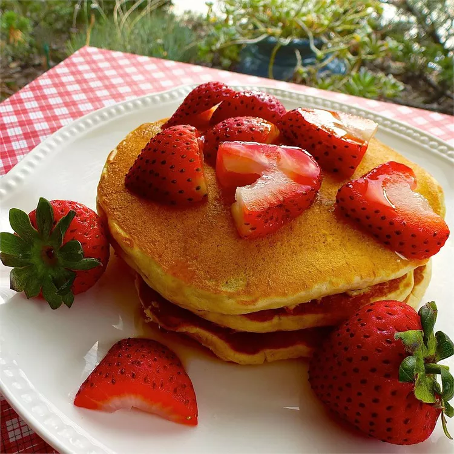

Oatmeal Pancakes

Description
Delicious pancakes, super simple and easy to make by using food processor.
Ingredients
- 3 quarter cup buttermilk
- Half cup all-purpose flour
- Half cup quick cooking oats
- 1 egg
- 2 tbsp vegetable oil
- 1 tbsp white sugar
- 1 tsp vanilla extract
- 1 tsp baking powder
- Half tsp baking soda
- Half tsp salt
Directions
- Combine buttermilk, flour, oats, egg, oil, sugar, vanilla, baking powder, baking soda and salt in blender; puree until smooth.
- Heat lightly oiled griddle over medium heat. Pour quarter cupfuls batter onto griddle, cooking until bubbles form, 1-2 minutes. Flip and cook until browned on other side, 1-2 minutes.